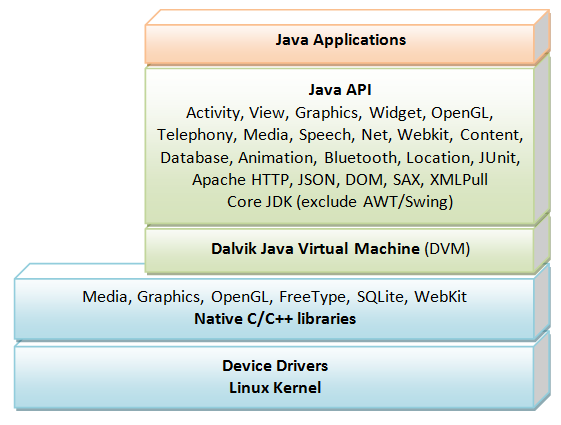

Introduction


Android is an Operating System for mobile devices developed by Google in 2007, which is built upon a Linux kernel. Android competes with Apple's iOS (for iPhone/iPad), Microsoft's Windows Phone(?), and many other proprietary mobile OSes.
The latest Android supports Phone/Tablet, TV, Wear (watch and glass), Automobile (Android Auto) and Internet of things (IoT).
Android Platform
Android is based on Linux with a set of native core C/C++ libraries. Android applications are written in Java/Kotlin. However, they run on Android's own Java Virtual Machine, called Dalvik Virtual Machine (DVM) (instead of JDK's JVM) which is optimized to operate on the small and mobile devices.
In May 2017, Google announced support for a new Kotlin programming language. As you are familiar with Java, you probably should start in Java (many of the examples out there are written in Java), and then move into Kotlin. Kotlin will not be discussed in this article.
The mother site for Android is https://www.android.com. For programmers and developers, visit https://developer.android.com to download the SDK, Android Training, API Guides and API documentation.
Installing "Android Studio IDE" and "Android SDK"
Installing Android software is probably the most challenging part of this project. It takes times (from 60 minutes to n hours to forever) and lot of disk space (>10G) - depending on your luck, your programming knowledge, and your PC power. You probably need a fairly decent PC to run the Android emulator! The recommended requirements are: 16GB RAM, 16GB of free disk space and 1920x1080 screen resolution. Running on real Android phone/tablet requires less resources.
Step 0: Pre-Installation Check List
- Before installing Android Studio, you need to install Java Development Kit (JDK). Read "How to install JDK". Ensure that your JDK is at or above JDK 8. You can check your JDK version using commands "
javac -version" (compiler) and "java -version" (runtime) on CMD/Terminal. - Uninstall older version(s) of "Android Studio" and "Android SDK", if any.
- The installation and many operations take a LONG time to complete. Do NOT stare at your screen or ceiling. Browse through the "Android for Developers" pages @ https://developer.android.com.
- We need to install TWO HUGE packages:
- Android Studio IDE (2.5 GB), which is an Integrated Development Environment (IDE) based on IntelliJ (a popular Java IDE); and
- Android SDK (Software Development Kit) (6-10 GB) for developing and running Android apps.
Step 1: Install "Android Studio IDE"
Reference: "Install Android Studio" @ https://developer.android.com/studio/install.
(For Windows)
- Check that environment variable
JAVA_HOMEis set to the JDK installation directory (e.g., "C:\Program Files\Java\jdk-21") via command "set JAVA_HOME". Otherwise, follow the steps HERE. - Check the system requirements for Android Studio/SDK @ https://developer.android.com/studio/install. Search for "System Requirements", e.g., For Windows 10, 8GB of RAM, 8GB of disk space, and 1280x800 minimum screen resolution. You should have enough space on C drive. Insufficient space on C drive will take you many days to install.
- Goto https://developer.android.com/studio ⇒ Click "Download Android Studio Iguana" ⇒ "Download Android Studio Iguana 2023.2.1 for Windows" to download the executable installer "
android-studio-2023.2.1.23-windows.exe" (1.1GB) (released on Feb 2024). - Run the downloaded installer ⇒ You may watch a short video @ https://developer.android.com/studio/install.
- In "Welcome to Android Studio Setup" ⇒ Next.
- In "Choose Components" ⇒ Accept default "Android Studio" and "Android Virtual Device" (i.e., Android Emulator) (space required: 3.5GB) ⇒ Next.
- In "Configuration Settings Install Location" ⇒ Accept default "
C:\Program Files\Android\Android Studio" ⇒ Next. - In "Choose Start Menu Folder" ⇒ Accept default "Android Studio" ⇒ Install ⇒ Wait...
- In "Completing Android Studio Setup" ⇒ Check "Start Android Studio" ⇒ Finish.
- Android Studio started ⇒ Continue to Step 2 to install "Android SDK".
by default, the "Android Studio IDE" will be installed in "C:\Program Files\Android\Android Studio", and the "Android SDK" in "c:\Users\username\AppData\Local\Android\Sdk".
Notes (SKIP): You can also use the ZIP version: Download the Windows 64-bit ZIP version (about 1.5GB) ⇒ UNZIP into a folder of your choice ⇒ Run "bin\studio64.exe" to launch the Android Studio ⇒ It will enter the "setup" for the first launch ⇒ "Do not Import Settings" ⇒ In "Welcome", click "Next" ⇒ In "Install Type", choose "Custom" (so that you can see what is going on) ⇒ In "Select Default JDK Location", use default ⇒ In "Select UI Theme", choose one that you like ⇒ In "SDK Components Setup", select "Android Virtual Device (1.05GB) ⇒ Take note of the "Android SDK Location" with default of "C:\Users\username\AppData\Local\Android\Sdk" ⇒ In "Emulator Settings", use default ⇒ In "Verify Settings", check the settings and choose "Finish" ⇒ In "Download Components", click "Details" and check that nothing fails ⇒ Wait ⇒ Wait ⇒ Wait.
(For macOS)
- Check the system requirements @ https://developer.android.com/studio/install, e.g., macOS 10.14 or higher, 8GB of RAM, 8GB of disk space, and 1280x800 minimum screen resolution.
- Goto https://developer.android.com/studio ⇒ (You may need to scroll down) For Intel processor, choose "Mac (64-bit) android-studio-2023.2.1.23-mac.dmg (1.2GB)"; for Apple M1/M2/M3 ARM processor, choose "Mac (64-bit, ARM) android-studio-2023.2.1.23-mac_arm.dmg (1.2GB)".
- Launch the downloaded "
.dmg" installation file ⇒ You may watch a short video @ https://developer.android.com/studio/install. - Drag and drop Android Studio into the "Applications" folder.
- Continue to Step 2 to install "Android SDK".
The "Android SDK" will be installed in "~/Library/Android/sdk", where ~ denotes your home directory.
Note: If you see a warning that says "the package is damaged and should be moved to the trash", goto "System Preferences" ⇒ Security & Privacy ⇒ under "Allow applications downloaded from" ⇒ select "Anywhere". Then run again.
Step 2: Installing Android SDK
This step takes a long time as you need to download about 3-5 GB of zip data, and expand to 6-10 GB of disk data.
Notes: You can actually copy the SDK from another computer with the same OS.
(For Windows and macOS)
- Launch Android Studio ⇒ For the first launch, it will run the "setup" wizard.
- Choose "do not import previous settings", if any.
- In "Welcome" or "Missing SDK" ⇒ Next.
- In "Install Type" ⇒ choose "Standard" (default) ⇒ next.
- In "SDK Components Setup" ⇒ Accept default "Android SDK - (408MB)" and "Android 14.0 ("UpsideDown Cake", API 34) - (159MB)" ⇒ Accept default SDK location (Windows: "
C:\Users\username\AppData\Local\Android\Sdk", macOS: "~/Library/Android/sdk") ⇒ Check your available disk space ⇒ Next. - In "Verify Settings", take note of the SDK directory (by default @
c:\Users\username\AppData\Local\Android\Sdkfor Windows, "~/Library/Android/sdk" for macOS) ⇒ Next.Setup Type: Standard SDK Folder: C:\Users\username\AppData\Local\Android\Sdk Total Download Size: 512 MB SDK Components to Download: Android Emulator 318 MB Android SDK Build-Tools 34 53.1 MB ...... Intel x86 Emulator Accelerator (HAXM installer) 500 KB ...... - In "License Agreement", Accept ALL licenses (You need to choose the licenses from the left panel one by one) ⇒ Finish ⇒ Wait ⇒ Wait ⇒ Wait ⇒ Wait ⇒ Wait ⇒ Wait...
- (For Windows) Use "File Explorer" to check the SDK installed directory. Take note that the "
AppData" is a hidden directory. You need to choose "View" ⇒ Uncheck "Hidden Items" to see this directory.
(For macOS) Use "Finder" ⇒ "Go to Folder" to check the SDK installed directory.
Notes (SKIP): You can also use "Android Studio" to check the SDK packages installed by selecting "Main Menu" ⇒ "More Actions" (or "Configure" in older versions, or "Tools") ⇒ "SDK Manager" ⇒ "Android SDK" (sidebar):
- Under "SDK Platforms" tab:
- Android API 34
- Under "SDK Tools" tab:
- Android SDK Build Tools 34-rcx
- Android Emulator
- Android SDK Platform-Tools (34.x.y)
- Intel x86 Emulator Accelerator (HAXM installer)
Write your First Android App
Android apps are written in Java (or Kotlin), and use XML extensively. I shall assume that you have basic knowledge of Java and XML.
Take note that Android emulator is slow - VERY VERY VERY SLOW!!! Be Patient!!! Using a physical phone is much faster.
Hello-World
Step 1: Create a New Android Project
- Launch "Android Studio" ⇒ "Project" ⇒ "New Project".
- In "New Project" under "Template" ⇒ Select "Phone and Tablet" ⇒ Select "Empty Views Activity" ⇒ Next.
(Notes: In previous android studio version before April 2023, we use "Empty Activity"; but it has changed and no longer supports "Java".) - In "Empty Views Activity" ⇒ Set "Name" to "Hello Android" (this will be the "title" of your app in your phone's menu) ⇒ Take note that "Package name" and "Save Location" will be updated automatically ⇒ In "Language", select "Java" ⇒ Leave the "Minimum API Level" and the rests to default ⇒ Finish.
- Be patient! It could take a few minutes to set up your first app. It will also install the missing SDK components, if any. Watch the "progress bar" at the bottom status bar and Zzzzzzzzz...... If you see "2 processes running", you can click on it to see the details. Once the progress bar indicates completion, a working hello-world app is created by default. This may take more than 5 minutes to complete for the first run!!!
- Play around these buttons, which toggle between show/hide.
Step 2: Setup Emulator (aka Android Virtual Device or AVD)
Reference: "Create and manage virtual devices" @ https://developer.android.com/studio/run/managing-avds
Notes: The older versions of Android Studio called the Android Emulator "Android Virtual Device" or "AVD".
To run your Android app under an emulator, you need to first create an Android Virtual Devices (AVD). An AVD emulates a specific mobile device (e.g., your zPhone 88 or Taimi Green).
- In Android studio, select "Device Manager" (3rd button on the RIGHT menu bar - see the above diagram).
- Choose "Create Virtual Device" (the "PLUS" button).
- In "Select Hardware", "Choose a device definition" ⇒ In "Category", choose "Phone" ⇒ In "Name", choose "Small Phone" (for minimal load) (or any phone that you like) ⇒ Next.
- In "System Image", "Select a System Image" ⇒ Choose "UpsideDown Cake" "API Level 34" (Don't use the xxxPrivacySandbox), click the "Download" icon ⇒ Wait ⇒ Wait ⇒ Wait...
- In "Android Virtual Device (AVD)" "Verify Configuration" ⇒ Finish. An AVD called "Small Phone API 34" is created.
- You can start the emulator by clicking the "Start" button (Right-Pointing Triangle) next to the device in "Device Manager".
- If you see "VT-x is disabled in BIOS": Check your BIOS setting to ensure that "Virtualization Technology" is enabled. Shutdown and re-boot your PC to enter the BIOS setup. This is machine dependent. Google "Your-PC-brand-and-model enter BIOS setup". For example, for my HP computer ⇒ Boot ⇒ "ESC" to enter BIOS setup ⇒ Advanced ⇒ System Options ⇒ Check "Virtualization Technology (VTx)" ⇒ Save ⇒ Exit.
Step 3: Run the Android App on Emulator
- In Android Studio, click "Run app" (GREEN right-facing triangle on the TOP menu bar) ⇒ Wait...
- You MAY BE prompted to install Intel HAXM (Hardware Accelerated Execution Manager). Follow the instruction to install HAXM.
- Be patient! It may take a few MINUTES to fire up the app on the emulator. The status shows "Gradle build running". Once build completes, the emulator will be launched. You first see a blank screen ⇒ wait ⇒ Google logo ⇒ wait ⇒ G logo ⇒ wait and wait and wait ⇒ "Android" ⇒ Phone's Home screen ⇒ "Hello, world!" message.
If you did not see the emulator, click the "Running Devices" (4th icons on the RIGHT menu bar) to show the emulator.
If you have problem running on the emulator, I suggest you try to run on an actual Android Phone, which requires much less resources on the PC. Goto next step. - To stop the app, click "Stop App" (RED) button on the top menu bar.
- Try out the 3 Android buttons: HOME, BACK, APP OVERVIEW (above the emulator).
- Try: In the "Emulator" pane, select "Options" ⇒ "View Mode" ⇒ "Float".
- Push the "HOME" button of the emulator ⇒ In the app menu, search for "Hello Android" app that we have just installed.
- DO NOT CLOSE THE EMULATOR, as it really takes a long time to start. You could always re-run the app (or run a new app) on the SAME emulator. Try re-run the "Hello Android" app by selecting "Run app".
Common Errors:
- Google the "error message"!
- If everything fails, select "File" menu ⇒ "Invalidate Caches / Restart..." ⇒ and wait ...
- Cannot find "AVD manager" in the "Tool" menu: You have missing packages. You should have a window with Gradle alert with a link which you can click and you will see a window with a prompt to download missing packages. When all stuff downloaded the "ADV manager" should be enabled.
- If you get an error message "Fail to find target with hash string 'android-26'". Either click the link "Install missing platform(s) and sync project" to install API-26 (another GB download!); or Under "Gradle Scripts" ⇒ Open "build.gradle (Module: app)" ⇒ Change "
compileSdkVersion" and "targetSdkVersion" from 26 to 27 (we have installed API-27) and "com.android.support:appcompat-v7:26.x.x" to "27.0.0". - If you get an error message "Re-download dependencies and sync project (requires network)", click the link to download. If the message appears again:
- (Windows) Goto "
C:\Users\username\.gradle\wrapper\dists" and delete "gradle-x.x-all". Take note the ".gradle" is a hidden directory and you need to enable viewing of hidden directory. - (Macs) Goto "
~\.gradle\wrapper\dists" and delete "gradle-x.x-all". Take note the ".gradle" is a hidden directory and you need to enable viewing of hidden directory.
This error is due to poor network condition, resulted in corrupted download. - (Windows) Goto "
- If you encountered error "Emulator: ERROR: x86 emulation currently requires hardware acceleration", Read "https://stackoverflow.com/questions/29136173/emulator-error-x86-emulation-currently-requires-hardware-acceleration", (6), and (7).
- If you encountered error "HAX is not working..." ⇒ Open "SDK Manager" ⇒ SDK Tools ⇒ Check if "Intel x86 Emulator Accelerator (HAXM Installer)" is installed ⇒ Goto SDK Location (by default, "
C:\Users\your-username\AppData\Local\Android\Sdk\extras\intel\Hardware_Accelerated_Execution_Manager" for Windows or "~/Library/Android/sdk/extras/intel/Hardware_Accelerated_Execution_Manager" for macOS) ⇒ run "intelhaxm-android.exe" to install HAXM ⇒ Be patient! The installer may take a while to launch ⇒ Follow the screen instructions to complete the setup.
Take note that: (a) In Windows, the "AppData" directory is hidden. You need to unhide via "File Explorer" ⇒ "View" menu ⇒ Uncheck "Hidden Items. (b) In macOS, the "Library" folder is hidden. You can unhide via "Finder" ⇒ Go ⇒ Home ⇒ Settings ⇒ Show View Option.
If the problem persists, remove and then re-install. - If you encountered error "Intel virtualization technology (VT-x) is not turned on" ⇒ Check your BIOS setting to ensure that "Intel virtualization technology" is enabled. Shutdown and re-boot your PC to enter the BIOS setup. This is machine dependent. Google "Your-PC-brand-and-model enter BIOS setup".
If "Intel virtualization technology" is already enabled, this error is probably caused by your antivirus software. Disable your antivirus for this session and rerun.
See http://stackoverflow.com/questions/21635504/error-during-installing-haxm-vt-x-not-working. - If you have problem creating AVD via "AVD Manager" (On macOS having error "Studio quit unexpectedly"), open the AVD manager via command line as follows:
// For macOS cd ~/Library/Android/sdk/tools ./android avd // For Windows cd C:\Users\your-username\AppData\Local\Android\sdk\tools android avd
- If the emulator flashes and disappears, with error message "error while loading state for instance 0x0 of device 'goldfish_pipe'", installed a newer version of HAXM @ "C:\Users\username\AppData\Local\Android\Sdk\extras\intel\Hardware_Accelerated_Execution_Manager\intelhaxm-android.exe".
Step 4: Run the App on Real Android Phones
Reference: "Run on Real Device" @ https://developer.android.com/training/basics/firstapp/running-app.html#RealDevice.
(NEW) (Wi-Fi) In the latest Android Studio, you can "Pair (real) devices using Wifi". Read https://developer.android.com/tools/adb ⇒ "Connect to a device over Wi-Fi".
- On your phone, enable "Developer Options": Goto "Settings" ⇒ "About Phone" (last item) ⇒ "Software Information" ⇒ Tap "Build Number" 7 times ⇒ "Developer mode has been enabled"
- On your phone, goto "Settings" ⇒ "Developer Options" (last item) ⇒ Enable "USB Debugging".
- On your phone, goto "Settings" ⇒ "Developer Options" (last item) ⇒ Enable "Wireless Debugging".
- On your phone, tap "Wireless Debugging" ⇒ "Pair device with QR Code"
- On your Android Studio, goto "Device Manager" ⇒ "Pair Device using Wi-Fi" ⇒ "Pair using QR code"
- Use your phone to scan the QR code ⇒ Close (DONE).
- You can run your app on the phone by choosing your phone on the "Running Devices".
(OLD) (USB Cable) To run the Android app on a REAL device (Android Phone or Tablet) using USB cable:
- Connect the real device to your computer. Make sure that you have the "USB Driver" for your device installed on your computer. If not, goto https://developer.android.com/studio/run/oem-usb.html to Install OEM USB Drivers. If you device is not certified there, good luck! It took me many hours to find a compatible driver for my cheap un-brand Tablet.
- Enable "USB Debugging" mode on your phone:
(On newer Android Phone) Need to enable "Developer options" via "Settings" ⇒ "About Phone" ⇒ "Software Information" ⇒ Tap "Build number" seven (7) times until "Developer Mode" is displayed. Return to the "Settings" menu to find "Developer options" ⇒ Open "Developer options" ⇒ Enable "USB debugging".
(On Older Android Phone) If you cannot find the above options, change your phone or google.
Also enable "Unknown source" from "Applications". This allows applications from unknown sources to be installed on the device. - You shall see the message "USB Debugging Connected" (or "Allow USB debugging") when you plugs the USB cable into your computer.
- You can find your phone under "Device Manager".
- To run the hello-world on your phone: From Android Studio, select "Run" menu ⇒ "Run app" ⇒ Your device shall be listed under "Choose a running device" ⇒ Select the device ⇒ OK ⇒ "Hello-world" will appear on your phone.
- In your phone's app menu, look for the "Hello Android" app that we have just installed.
Deleting a Project
To delete a project, select "File" ⇒ "Close Project" ⇒ On the "Recent Projects" ⇒ Hover over the project ⇒ Press "Delete" key on the project to remove the project from Android Studio ⇒ You can then delete the project directory from the file system.
Hello-world "by Coding"
There are two ways to create User Interface (UI) on Android:
- Write Java codes.
- Layout via XML descriptions and let the system generates the Java code for you.
Let's begin with writing Java codes (because I have taught you Java). We shall continue from the "Hello Android" project created earlier.
MainActivity.java
Expand the "app" node (by clicking on the triangle). Expand the "java" node. Expand the "com.example.helloandroid" package node. Open the "MainActivity.java" (which has already been opened).
- Add the import statement (in RED).
- REPLACE the
onCreate()method as shown. - Do not touch the rest of the codes, if any.
package ......; import ......; import android.widget.TextView; // 1. Add this line public class MainActivity extends ...... { // 2. REPLACE the ENTIRE onCreate() method as follows: @Override protected void onCreate(Bundle savedInstanceState) { super.onCreate(savedInstanceState); TextView textView = new TextView(this); // Construct a TextView UI component textView.setText("hello world, from my Java codes!"); // Set the text message for TextView setContentView(textView); // this Activity sets its content to the TextView } // 3. Do not touch the rest of the codes, if any ...... ...... }
Run the application (click "Run app" (GREEN) button). You shall see the message "hello world, from my Java codes!" displayed. This round, you should not have to wait too long (hopefully)!
Dissecting the "MainActivity.java" - Application, Activity & View
Android app is very different from a traditional standalone Java or C/C++ program, which is textual and starts from a main(). Android app is graphical and organized by screens (called activity).
An Android application could have one or more Activity (screens).
An Activity, which usually has a screen, is a single, focused thing that the user can interact with the application (hence called activity). The MainActivity extends the android.app.Activity class (or its subclass such as android.app.AppCompatActivity), and overrides the onCreate() method. The onCreate() is a call-back method, which is called back by the Android system when the activity is launched.
A View is a UI component (or widget, or control). We construct a TextView (which is a subclass View for showing a text message), and set its text. We then set the content-view of the MainActivity screen to this TextView.
Android App Descriptor File - "AndroidManifest.xml"
An Android app has a manifest file named AndroidManifest.xml under "app" ⇒ "manifests". It describes and configures the Android app.
For example, our "Hello Android" application, with an activity called MainActivity, has the following manifest (generated automatically by the Android SDK when the project was built). DO NOT change this code.
<?xml ......?>
<manifest ......>
<application
......
android:label="Hello Android"
......
......>
<activity android:name=".MainActivity">
<intent-filter>
<action android:name="android.intent.action.MAIN" />
<category android:name="android.intent.category.LAUNCHER" />
</intent-filter>
</activity>
</application>
</manifest>
- The
<manifest>contains ONE<application>element. - The
<application>element specifies the label (the app's title), and etc. It contains one or more<activity>elements. - This application has ONE activity. The
<activity>element declares its program name ("MainActivity" in current package "."). It may contain<intent-filter>. - The
<intent-filter>declares that this activity is the entry point (android.intent.action.MAIN) of the application. This activity is to be added to the application launcher (android.intent.category.LAUNCHER), when the app is started.
Hello-World using "XML Layout"
Instead of writing Java codes to create the user interface (UI) (as in the above example). It is easier, more flexible and therefore recommended to layout your UI components via a descriptive XML layout file. In this way, you don't need to hardcode the views, and you can easily modify the look and feel of the application by editing the XML layout file. The Java codes can therefore focus on the business logic instead of the presentation.
Let's rewrite our hello-world to use XML layout.
Step 1: Create a New Android App
STOP the app by pushing the "Stop App" (RED) button, if the app is still running.
CLOSE the project, via "Main Menu" ⇒ "File" ⇒ "Close Project". Always CLOSE the previous project before starting a new project.
Start a new Android Studio project ⇒ "Phone and Tablet" ⇒ "Empty View Activity" ⇒ Next ⇒ Set "Name" to "Hello Android XML" ⇒ "Finish".
Step 2: Define the Layout in XML File "res\layout\activity_main.xml"
Expand the "app" ⇒ "res (for resource)" ⇒ "layout" node. Open the "activity_main.xml" (which has already been opened).
Android Studio provides 3 views for an XML layout file: "Code" (XML code), "Split" (XML+Graphical) or "Design" (Graphical), - selectable by the icons at the TOP-RIGHT corner of the panel. Play around these 3 views!
Since I am training you as a programmer, select the "Code" view and study the codes.
<?xml ....."?> <androidx.constraintlayout.widget.ConstraintLayout ...... android:layout_width="match_parent" android:layout_height="match_parent" tools:context=".MainActivity"> <TextView android:layout_width="wrap_content" android:layout_height="wrap_content" android:text="Hello World!" app:layout_constraintBottom_toBottomOf="parent" app:layout_constraintLeft_toLeftOf="parent" app:layout_constraintRight_toRightOf="parent" app:layout_constraintTop_toTopOf="parent" /> </androidx.constraintlayout.widget.ConstraintLayout>
The XML declares a TextView (text field) that holds a text string "Hello World!". The TextView component has width and height big enough to hold its content ("wrap_content").
Step 3: Defining String References/Values in XML Value File "res\values\string.xml"
Instead of hardcoding the Hello-World string directly inside the TextView (as in the above XML file), we shall use a string reference (or string variable) for better flexibility and internationalization (to support multiple languages).
Expand res/values node. Open strings.xml, and ADD the line in red:
<resources>
<string name="app_name">Hello Android XML</string>
<string name="hello">hello world, from XML layout!</string>
</resources>
This "string.xml" defines 2 variables (with values):
- A string variable "
app_name" contains the application's name, that you entered when you created the project. - A string variable "
hello" contains the value of "hello world, from XML layout!".
Now, modify the "activity_main.xml" to refer to the string variable "hello", in the format "@string/hello", as follows:
......
<TextView
android:layout_width="wrap_content"
android:layout_height="wrap_content"
android:text="@string/hello"
...... />
......
Step 4: Program the Activity in "MainActivity.java"
Next, check and study the "MainActivity.java" (under app/java/com.example.helloandroidxml), as follows. No need to change this file.
package ......;
import ......;
public class MainActivity extends ...... {
@Override
protected void onCreate(Bundle savedInstanceState) {
super.onCreate(savedInstanceState);
......
setContentView(R.layout.activity_main);
// This activity uses "res\layout\activity_main.xml" to layout the screen.
// Java instance "R.layout.activity_main" maps to "res\layout\activity_main.xml"
......
}
}
The "MainActivity" sets its content-view to "R.layout.activity_main", which is mapped to the XML layout file "res\layout\activity_main.xml" that we have modified earlier.
Step 5: Run the App
Run the application. You shall see the new string "hello world, from XML codes!" displayed.
Uninstall Android Studio IDE and Android SDK (Don't do until it's over)
Android is huge. You probably want to remove it after your project sessions.
(For Windows)
- Run "Control Panel" ⇒ "Programs and Features" ⇒ Uninstall "Android Studio"; or remove the ZIP installed files.
- Delete:
C:\Users\username\AppData\Local\Android\Sdk(this directory contains the SDK and is huge, about 5GB)C:\Users\username\.androidC:\Users\username\.AndroidStudioX.XC:\Users\username\.gradleC:\Users\username\AndroidStudioProjects(these are the Android projects written by you)
(For macOS)
[TODO]
REFERENCES & RESOURCES
- Android Developer @ http://developer.android.com/index.html.
- "Android Guides" @ http://developer.android.com/guide/index.html.
- Android "API Reference" @ https://developer.android.com/reference/packages.html.